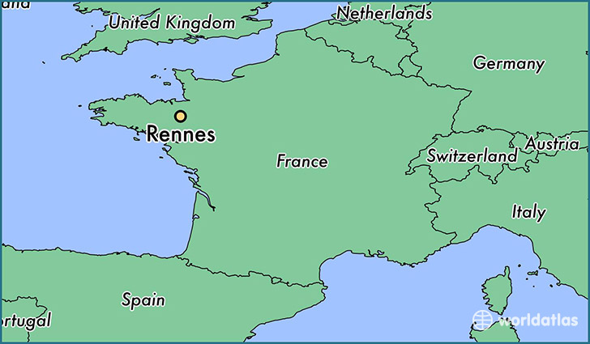
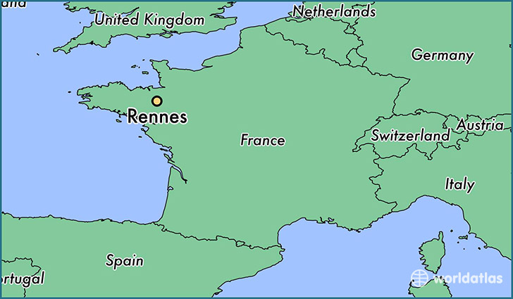
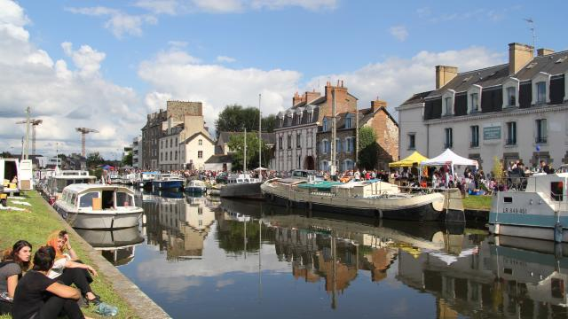

Elle située au milieu del île Vilaine et Ille. Elle située dans la région de Bretagne.
Elle est a 308 kilomètres de la France Google maps

Elle située au milieu del île Vilaine et Ille. Elle située dans la région de Bretagne.
Elle est a 308 kilomètres de la France Google maps

Le météo pour Rennes il fait un peu froid et humide en hiver
MétéoEn été il fait chaud et il ne fait pas du vent
Il y a des nuages et il y a du soleil
La région offre des lieux merveilleux
Bennes est un lieu idéal pour des activités culturelles

On arrivera à Parc du Tabor écologique. Tu pourra dormir un peu sur la pelouse.
Tu pourras visiter le Parlement de Bretagne, est un bâtiment d'arquitecture classique. La t the example files are commented well enough that even CSS novices can use them as starting points. Please see the CSS Resource Guide for advanced tutorials and tips on working with CSS.
You may modify the style sheet in any way you wish, but not the HTML. This may seem daunting at first if you’ve never worked this way before, but follow the listed links to learn more, and use the sample files as a guide.
Download the sample HTML and CSS to work on a copy locally. Once you have completed your masterpiece (and please, don’t submit half-finished work) upload your CSS file to a web server under your control. Send us a link to an archive of that file and all associated assets, and if we choose to use it we will download it and place it on our server.
Why participate? For recognition, inspiration, and a resource we can all refer to showing people how amazing CSS really can be. This site serves as equal parts inspiration for those working on the web today, learning tool for those who will be tomorrow, and gallery of future techniques we can all look forward to.